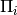
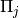
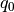

DirectInhomogeneousQuadrature¶
About the DirectInhomogeneousQuadrature class¶
The WaveBlocks Project
@author: R. Bourquin @copyright: Copyright (C) 2010, 2011, 2012, 2013, 2014, 2015, 2016 R. Bourquin @license: Modified BSD License
Inheritance diagram¶

Class documentation¶
-
class
WaveBlocksND.DirectInhomogeneousQuadrature(QR=None)[source]¶ -
do_quadrature(row, col)[source]¶ Evaluates by standard quadrature the integral
 for a polynomial
function
for a polynomial
function  with
with  .
.Parameters: - row – The index
 of the component
of the component  of
of  .
. - row – The index
 of the component
of the component  of
of  .
.
Returns: A complex valued matrix of shape
 .
.- row – The index
-
get_description()[source]¶ Return a description of this quadrature object. A description is a
dictcontaining all key-value pairs necessary to reconstruct the current instance. A description never contains any data.
-
get_qr()¶ Return the
QuadratureRulesubclass instance used for quadrature.Returns: The current instance of the quadrature rule.
-
initialize_operator(operator=None, matrix=False, eval_at_once=False)[source]¶ Provide the operator part of the inner product to evaluate. This function initializes the operator used for quadratures and for building matrices.
Parameters: - operator – The operator of the inner product.
If
Nonea suitable identity is used. - matrix – Set this to
True(Default isFalse) in case we want to compute the matrix elements. For nasty technical reasons we can not yet unify the operator call syntax. - eval_at_once (Boolean, default is
False.) – Flag to tell whether the operator supports theentry=(r,c)call syntax.
- operator – The operator of the inner product.
If
-
initialize_packet(pacbra, packet=None)[source]¶ Provide the wavepacket parts of the inner product to evaluate. Since the quadrature is inhomogeneous different wavepackets can be used for the ‘bra’ as well as the ‘ket’ part.
Parameters: - pacbra – The packet that is used for the ‘bra’ part.
- packet – The packet that is used for the ‘ket’ part.
-
mix_parameters(Pibra, Piket)[source]¶ Mix the two parameter sets  and  from the bra and the ket wavepackets
![\Phi\left[\Pi_i\right]](../_images/math/663fc492f854c8430d5cf720b17250e1bcb66f90.png) and
and ![\Phi^\prime\left[\Pi_j\right]](../_images/math/9d621ebe0a6b2dd83663f89702f2aa40fb296262.png) .
.Parameters: - Pibra – The parameter set from the bra part wavepacket.
- Piket – The parameter set from the ket part wavepacket.
Returns: The mixed parameters  and
 . (See the theory for details.)
. (See the theory for details.)
-
perform_build_matrix(row, col)¶ Computes by standard quadrature the matrix elements
 for a general function
with .
for a general function
with .Parameters: - row – The index of the component of .
- row – The index of the component of .
Returns: A complex valued matrix of shape
.- row – The index
-
perform_quadrature(row, col)¶ Evaluates by numerical steepest descent the integral
for a polynomial
function with .Parameters: - row – The index of the component of .
- row – The index of the component of .
Returns: A single complex floating point number.
- row – The index
-
prepare(rows, cols)[source]¶ Precompute some values needed for evaluating the quadrature
 or the corresponding
matrix over the basis functions of and .
or the corresponding
matrix over the basis functions of and .Parameters: - rows – A list of all with
 selecting the for which we precompute values.
selecting the for which we precompute values. - cols – A list of all with
 selecting the for which we precompute values.
selecting the for which we precompute values.
- rows – A list of all
-
set_qr(QR)¶ Set the
QuadratureRulesubclass instance used for quadrature.Parameters: QR – The new QuadratureRuleinstance.
-
transform_nodes(Pibra, Piket, eps, *, QR=None)[source]¶ Transform the quadrature nodes
 such that they
fit the given wavepackets and
best.
such that they
fit the given wavepackets and
best.Parameters: - Pibra – The parameter set from the bra part wavepacket.
- Piket – The parameter set from the ket part wavepacket.
- eps – The value of
 of the wavepacket.
of the wavepacket. - QR – An optional quadrature rule
 providing
the nodes. If not given the internal quadrature rule will be used.
providing
the nodes. If not given the internal quadrature rule will be used.
Returns: A two-dimensional ndarray of shape
 where
where
 denotes the total number of quadrature nodes.
denotes the total number of quadrature nodes.
-